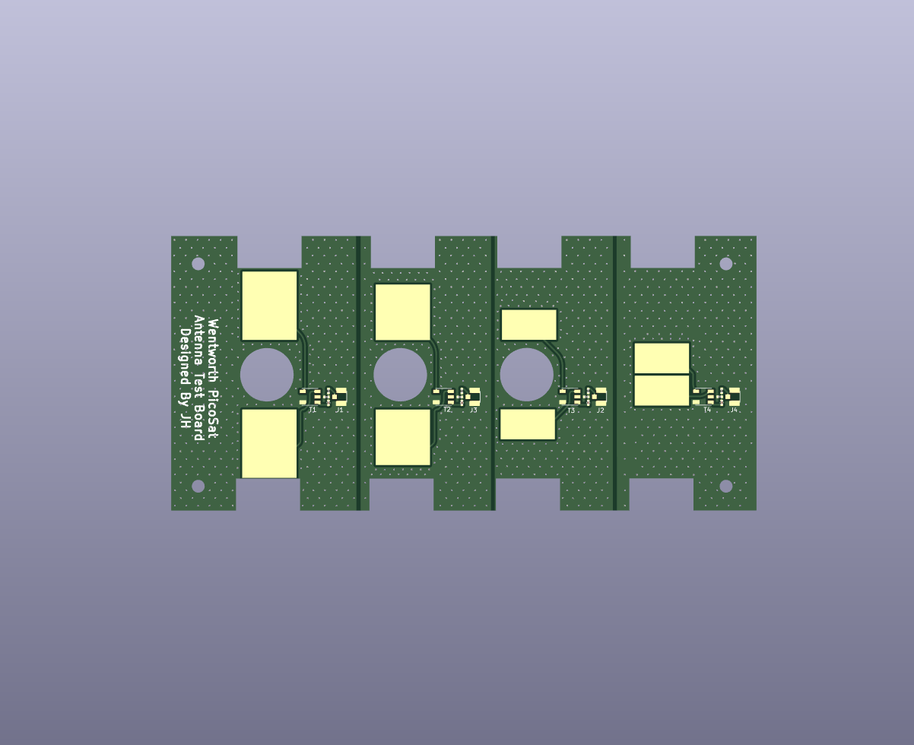

Prototype circuit board for testing and tuning tape measure dipole antenna performance
← Back to Projects
I created an antenna prototype circuit board to test and tune the performance of a tape measure dipole antenna. This board has 4 different antenna pad layouts to determine which setup works best for our satellite. I varied the area of the pad as well as the distance between the pads, which changes the characteristics of the antenna. A "T" network of a resistor, capacitor and inductor was used to tune the impedance of our circuit to 50 ohms, which is the impedance of our radio communications circuit. Also included is a balun that creates a balanced, differential signal for the antenna. Lastly, is a UFL connector to connect a vector network analyzer, to test the antenna's performance.
This circuit board is featured in my research paper "The Design and Development of a Low SWaP Communications System for a 1P Cube Satellite".
Tape measure dipole
50 ohms tuned
4 different pad configurations